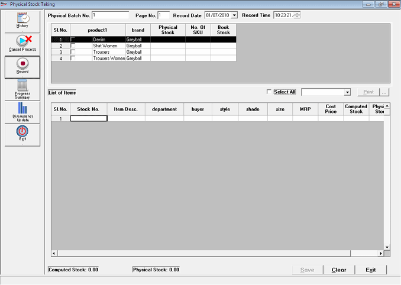
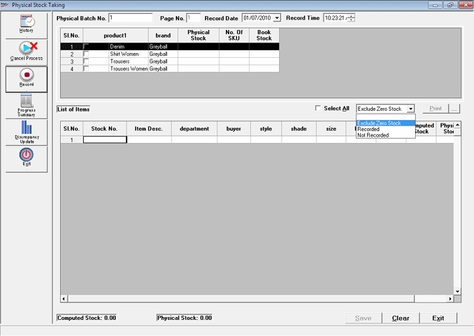
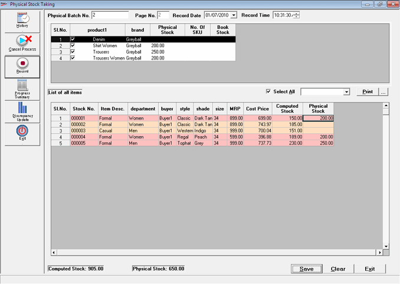

With this option, fill the grid with item details using filter criteria.

Physical Batch No.: Enter the batch reference number or select the existing batch reference number. For more details on Batch No. and Page No. refer the Manual Entry option
All Item classification1 (Product) and Item classification 2 (Brand) available in the defined Recording Scope is displayed in the upper grid/ table. The number of SKUs and the computed stock for each combination is also displayed. Select any row to enter the physical stock quantity of all the SKUs of the selected item classification and press Enter or double click. The items related to the selected classification are displayed in the lower grid.
Items for which physical stocks are already recorded, using Manual Entry/ Scan/ Import options, are not displayed.
Physical Stock can be recorded for the displayed items.

Check Select All to display the items for all the item classifications displayed in the upper grid
Select any option from the combo box to apply a filter on the items to be displayed.
Exclude Zero Stock: Displays all items excluding computed Stocks as zero.
Recorded: Displays the Items for which stocks are already recorded using Manual Entry/ Scan/ Import and which belongs to the defined Scope. The physical stock quantity cannot be entered for these items.
Not Recorded: Displays items that belong to the defined scope for which stocks are not recorded in any of the previous physical stock entry The physical stock quantity can be entered.
Enter the physical stock for each stock number using the Stock Sheets manually prepared.

Print: To print items displayed in the lower grid.
To search the path, click  , select the path, the file name
and then click on the Print.
The file
is created in the text file format in the specified directory.
, select the path, the file name
and then click on the Print.
The file
is created in the text file format in the specified directory.